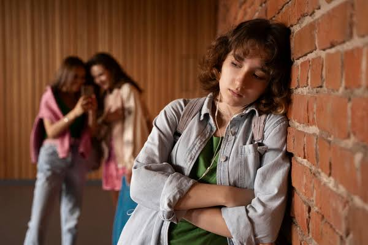

🚫 ¿Cómo actuar ante el acoso escolar?
El acoso escolar o bullying es una forma de violencia que puede afectar emocionalmente a quien la sufre. Puede presentarse mediante insultos, burlas, amenazas, golpes, exclusión o agresiones a través de internet y redes sociales.
🛑 No guardes silencio
Si estás sufriendo acoso, cuéntaselo a una persona de confianza. Hablar sobre lo que ocurre es un paso importante para recibir ayuda y evitar que la situación continúe.
🗣️ Habla con un adulto
Puedes acudir con tus padres, maestros, orientadores o directivos de la escuela. Ellos pueden ayudarte a encontrar una solución y protegerte.